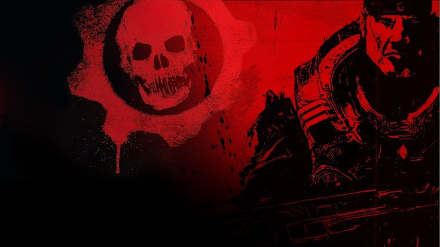
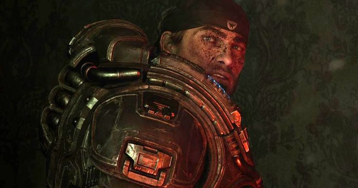
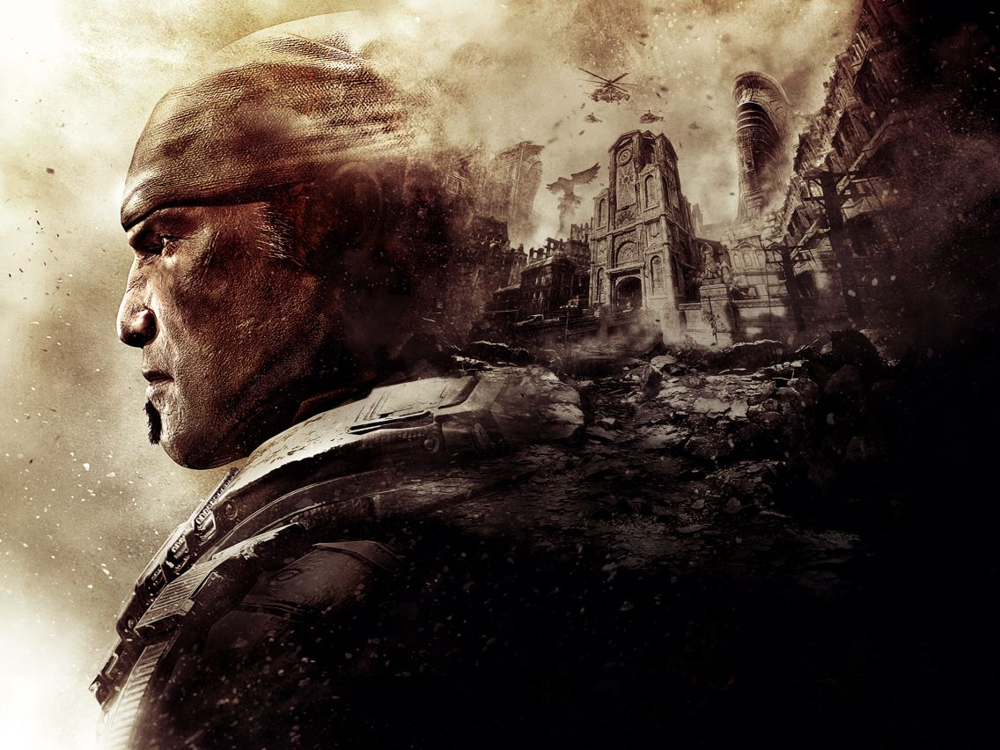

Coalition of Ordered Governments — Archivo Clasificado
Sargento Mayor · 26ª Compañía de Infantería · Delta Squad
La vida de Marcus Fenix es una épica de guerra, sacrificio y redención que abarca décadas de conflicto implacable. Desde los campos de fútbol de la Academia Osborn hasta las entrañas del planeta Sera, esta es la historia completa del hombre que se convirtió en la última esperanza de la humanidad.
Capítulo I · Antes de la Guerra

Imagen — Nacimiento de Marcus FenixAño 8 Antes de la Emergencia
Sera — Jacinto, Familia Fenix
Marcus Michael Fenix nació en Jacinto, la ciudad-fortaleza construida sobre el único basamento de granito inasequible a las criaturas del subsuelo. Hijo del brillante científico militar Adam Fenix y de Elain Fenix, creció rodeado de lujo relativo, pero también de una frialdad paternal que marcaría su psicología para siempre.
Adam Fenix era un genio reconocido por la Coalition of Ordered Governments (COG), dedicado en cuerpo y alma a sus investigaciones. La ausencia emocional del padre sembró en Marcus una combinación de admiración y resentimiento que persistiría décadas.

Imagen — Academia OsbornInfancia y Adolescencia
Formación, Amistades y el Rugido del Trybball
En los pasillos de la Academia Militar Osborn, Marcus conoció a Carlos Santiago, hermano mayor de Dominic Santiago. Esta amistad fue quizás la más significativa de su vida y definiría los lazos que lo unirían a Dom para siempre. Marcus destacaba en atletismo, especialmente en Trybball, un violento deporte de equipo donde su agresividad encontraba válvula de escape.
Aunque sus calificaciones académicas eran inconsistentes, su capacidad de liderazgo natural era evidente para todos los instructores. Ya desde joven mostraba una lealtad incondicional hacia quienes consideraba suyos, rasgo que definiría cada decisión de su vida adulta.
"No lucho por la COG, ni por Jacinto. Lucho por la persona que tengo a mi lado."
— Marcus Fenix
Imagen — La desaparición de Elain FenixTragedia Familiar
Elain Fenix — Desaparecida en el Archipiélago de Azura
Elain Fenix, la madre de Marcus, desapareció misteriosamente cuando él era joven. Durante años Marcus creyó que había muerto. La verdad, descubierta mucho después, era más oscura: Adam Fenix había enviado en secreto a Elain a la isla utópica de Azura, un enclave ultrasecreto de la COG, para protegerla cuando ella desarrolló una enfermedad mental severa vinculada a las Imulsión —el combustible milagroso que alimentaba la civilización de Sera.
Esta ausencia cavó un abismo entre padre e hijo. Adam se volvió aún más distante, enterrado en sus investigaciones. Marcus aprendió muy temprano que la lealtad y el amor tenían que buscarse fuera de la familia biológica, en los hermanos que uno elige en el campo de batalla.
Capítulo II · Las Guerras del Péndulo
Conflicto Global Pre-Locust
La Primera Sangre y la Hermandad con Dom
Al alcanzar la mayoría de edad, Marcus se alistó voluntariamente en el ejército de la COG durante las Guerras del Péndulo, un prolongado conflicto entre las grandes naciones de Sera por el control de los depósitos de Imulsión. Aquí combatió hombro con hombro junto a Dom Santiago, sellando la hermandad de por vida tras la muerte en combate de Carlos Santiago, el hermano mayor de Dom.
Marcus ascendió rápidamente, ganándose la reputación de soldado casi sobrehumano por su resistencia física y su frialdad bajo el fuego enemigo. Sirvió en múltiples frentes, acumulando condecoraciones pero también cicatrices que jamás mostró al mundo.
Sacrificio y Lealtad
El Sacrificio que Forjó Dos Vidas
Carlos Santiago murió protegiendo a Marcus durante un combate en las Guerras del Péndulo, un sacrificio que Marcus jamás superaría completamente. Este evento cimentó un vínculo de deuda y amor fraternal entre Marcus y Dom que ningún campo de batalla podría romper.
Dom nunca culpó a Marcus. En cambio, prometió que seguiría donde Carlos había dejado: cuidando de Marcus Fenix como un hermano. Esta promesa definiría el destino de ambos durante las décadas más oscuras de Sera.
"Carlos te hubiera dicho lo mismo, Marcus. Tú no tienes la culpa de nada."
— Dominic SantiagoCapítulo III · Día E y la Guerra contra los Locust
Año 0 — Día de la Emergencia
El Fin de la Civilización Humana Tal Como Se Conocía
El Día de la Emergencia (E-Day) llegó sin previo aviso. Millones de criaturas subterráneas —los Locust Horde— brotaron simultáneamente desde túneles en todo el planeta Sera, masacrando a la población civil antes de que ningún gobierno pudiera reaccionar. En pocas horas, ciudades enteras fueron destruidas o engullidas por el suelo.
Marcus combatió desde el primer momento, pero las líneas de la COG colapzaban por todas partes. La escala de la amenaza superaba cualquier previsión. En un solo día murió la mayoría de la población humana de Sera. Lo que siguió fue una guerra de supervivencia sin cuartel durante quince años.
Marcus Fenix emergió como uno de los guerreros más eficaces de la COG durante los primeros años de la Locust War. Pero ningún logro en el campo de batalla podría prepararlo para la decisión que lo definiría para el resto de su vida.
Año 9 de la Emergencia — El Quiebre
El Sitio de Ephyra — Abandonar el Puesto
Durante el crítico Sitio de Ephyra, con la capital humana a punto de caer, Marcus tomó la decisión que destruiría su carrera: abandonó su posición de combate para intentar rescatar a su padre, Adam Fenix, atrapado en la mansión familiar durante el ataque Locust.
Adam fue dado por muerto. La posición de Marcus colapsó, y sus compañeros soldados pagaron con sus vidas el abandono. Marcus fue arrestado, juzgado en consejo de guerra y condenado por traición y abandono del puesto en combate. La sentencia: 40 años en la Prisión de Máxima Seguridad de Jacinto — el Slab.
Años 9 al 14 de la Emergencia
Prisión de Jacinto — Sobrevivir entre Criminales y Locust
El Slab era una prisión fortaleza dentro del perímetro de granito de Jacinto, considerada inexpugnable. Marcus cumplió cuatro años allí, enfrentando no solo a presos peligrosos sino también a ataques Locust esporádicos que penetraban los muros. Sobrevivió donde otros no podían simplemente mediante la brutalidad adaptativa que la guerra le había enseñado.
Durante este período, el resto del mundo continuaba destruyéndose. Dom Santiago —único amigo fiel— visitaba regularmente al recluso, negándose a abandonarlo. Mientras tanto, Adam Fenix, que había sobrevivido en secreto, continuaba su misterioso trabajo para la COG desde Azura, cargando la culpa de haber sacrificado a su hijo.
"Sobreviví al Slab del mismo modo que sobreviví a todo lo demás: sin pensar demasiado en el mañana."
— Marcus FenixCapítulo IV · Gears of War I
Año 14 de la Emergencia
Operación: Extraer a Delta Squad
Con Jacinto al borde del colapso total, el General Hoffman autorizó la liberación de Marcus Fenix bajo una amnistía de emergencia. Dom irrumpió personalmente en el Slab mientras los Locust atacaban la prisión, rescatando a Marcus del fuego cruzado.
Marcus retomó las armas sin vacilar. Se reintegró a las fuerzas COG como líder de Delta Squad, junto a Dom, Augustus "Cole Train" Cole y Damon Baird. Su misión inmediata: recuperar el Resonador de Luz y desplegarlo en las entrañas del subsuelo para mapear la red de túneles Locust.
Gears of War I — Eventos Clave
Delta Squad vs. La Horda Locust Completa
Delta Squad descendió a las Hollow —la vasta red subterránea de los Locust— para desplegar el Resonador. Aunque el mapa obtenido fue incompleto, lograron usar los datos del ordenador de Adam Fenix —recuperados de la mansión Fenix destruida— para guiar la Bomba Lightmass a través del subsuelo.
Marcus detonó la bomba desde el Tyro Station, destruyendo vastas secciones de las Hollow y causando bajas masivas en los Locust. Sin embargo, la Reina Myrrah sobrevivió, y la guerra continuó. El descubrimiento de los datos de Adam Fenix también reveló a Marcus que su padre podría haber sobrevivido, sembrando una esperanza amarga.
Capítulo V · Gears of War II
Año 15 — Hollow Storm
La COG Lleva la Guerra a las Entrañas de la Tierra
Un año después, los Locust habían comenzado a usar las raíces de Imulsión para hundir activamente ciudades humanas. La COG respondió con la Operación Hollow Storm: la invasión masiva del subsuelo Locust. Delta Squad, liderado por Marcus, penetró profundamente en las Hollow, enfrentando horrores indescriptibles.
En las profundidades descubrieron a los Lambent —criaturas mutadas por sobreexposición a la Imulsión— en guerra con los propios Locust. Esto revelaba una amenaza aún mayor en el horizonte.
El Peso de la Humanidad
La Decisión Más Cruel de la Guerra
En las profundidades de las Hollow, Dom encontró finalmente a su esposa Maria Santiago, por quien había buscado durante años. Pero lo que encontró lo destrozó: Maria estaba irreparablemente dañada física y mentalmente por las torturas Locust. Ya no era quien había sido.
Dom tomó la decisión más devastadora de su vida: disparó a Maria para liberarla del sufrimiento. Marcus fue testigo silencioso. Este momento quebró algo irreparable en Dom, iniciando su camino hacia el sacrificio final. Marcus cargó el peso de ese momento junto a su hermano, sin palabras pero sin abandonarlo.
"Descansa, Maria. Ya terminó."
— Dominic Santiago, su último adiósEl Sacrificio Final de la Ciudad
Si No Pueden Defenderla, Que los Locust Se la Traguen
Al descubrir que los Locust planeaban hundir Jacinto —la última ciudad humana— bombeando agua de mar en sus cimientos, Marcus y Delta Squad tomaron una decisión audaz: acelerar el hundimiento ellos mismos, inundando masivamente las Hollow para ahogar a los Locust dentro.
La operación fue devastadoramente exitosa. Jacinto se hundió, inundando el subsuelo y masacrando a millones de Locust. Los supervivientes humanos fueron evacuados en barcos y Ravens. Marcus emergió de las aguas inundadas como el arquitecto de la victoria más costosa de la historia humana. La civilización de Sera estaba destruida, pero los humanos sobrevivían. Apenas.
Capítulo VI · Post Jacinto
Años 15-17 — La Era de los Refugiados
Construir Sobre las Ruinas de Todo
Los supervivientes de Jacinto navegaron hacia Vectes, una isla remota con una antigua base naval de la COG, que se convirtió en el nuevo hogar provisional de la humanidad. Marcus continuó sirviendo como soldado mientras la nueva sociedad intentaba reconstruirse desde cero.
Pero la amenaza Lambent —criaturas mutadas por Imulsión que explotaban violentamente al morir— comenzó a surgir del océano, atacando los asentamientos. Los Locust también continuaban apareciendo en superficie. La paz prometida nunca llegó. Marcus vio cómo la COG institucional colapsaba bajo el peso de demasiadas amenazas y muy pocos recursos.
Colapso Institucional
El Fin del Último Gobierno y el Nacimiento de los Survivalist
Ante la imparable amenaza Lambent y la imposibilidad de defender múltiples frentes, la COG oficial se disolvió. El Chairman Prescott desapareció misteriosamente. Los sobrevivientes se dispersaron en pequeñas comunidades: los leales continuadores de la COG bajo liderazgo militar informal, los Stranded que rechazaban cualquier autoridad, y grupos independientes que buscaban sobrevivir solos.
Marcus y Delta Squad continuaron operando como fuerza de combate autónoma desde el CNV Sovereign, un portaaviones que se convirtió en la base móvil de los últimos Gears. La pandemia Lambent avanzaba sin control.
Capítulo VII · Gears of War III — El Clímax
Año 18 — El Comienzo del Fin
Un Padre Vivo, una Solución y una Traición Revelada
Todo cambió cuando el Chairman Prescott reapareció inesperadamente en el Sovereign con un mensaje encriptado: Adam Fenix estaba vivo, retenido en Azura, y había desarrollado una solución para detener la pandemia Lambent. En ese mismo momento, el portaaviones fue atacado masivamente por Lambent, forzando la evacuación a tierra firme.
Marcus recibió la noticia con una mezcla de alivio, furia y confusión. Su padre había sobrevivido en secreto todos estos años mientras él sufría en el Slab y en el campo de batalla. La misión ahora era clara: llegar a Azura, rescatar a Adam y salvar a la humanidad con su solución.
Reunir Fuerzas — Actos I y II
Rusty Nail, Anvil Gate y los Sobrevivientes
Marcus lideró la reunificación de fuerzas dispersas. Delta Squad se dividió en equipos: Cole y Baird viajaron a Hanover para reclutar sobrevivientes civiles, encontrando la ciudad devastada y el estadio natal de Cole infestado. Marcus y Dom marcharon hacia el Fuerte Anvil Gate, donde el Sargento Bernadette Mataki y el Mayor Gill Gettner reforzaron las filas.
La revelación de que Prescott había ocultado la existencia de Azura —y con ella la de Adam Fenix— provocó una crisis de confianza. Marcus contuvo su rabia, concentrado en la misión. Necesitaban un submarino para acceder a la isla, y para eso necesitarían pasar por el corazón del territorio Locust controlado por la Reina Myrrah.
El Momento Más Devastador — Acto III
Mercy, 18 A.E. — La Deuda Que Nunca Podrá Pagarse
En los campos de combustible de Mercy, rodeados por un número aplastante de Lambent y Locust que amenazaba con aniquilar a todo Delta Squad, Dominic Santiago tomó su última decisión. Estrelló un camión cisterna cargado de combustible contra las instalaciones eneminas, provocando una explosión masiva que eliminó a todos los enemigos en el área pero que también lo consumió a él.
Dominic Santiago murió. El hombre que había rescatado a Marcus del Slab. El hermano que nunca lo abandonó. El amigo más leal que el mundo de Sera había conocido. Marcus presenció la explosión en silencio, el rostro pétreo mientras por dentro se derrumbaba algo que nunca volvería a reconstruirse por completo.
La muerte de Dom es considerada uno de los momentos más emocionalmente devastadores de la saga. Marcus, que rara vez mostraba vulnerabilidad, cargó ese duelo en silencio hasta el final de la guerra. Cole y Baird observaron al líder de Delta Squad mirar los restos ardientes, y nadie pronunció una sola palabra. Algunas pérdidas van más allá de las palabras.
"Todo lo que hice, lo hice por ti, hermano. Y lo volvería a hacer."
— Dominic Santiago, su legadoActo IV — La Isla Utópica Secreta
El Último Secreto de la COG
A bordo del submarino CNV Adamantine, Delta Squad llegó a Azura atravesando el campo de interferencia que la mantenía oculta del mundo exterior. La isla era extraordinaria: un resort de investigación de élite construido por la COG para preservar las mentes más brillantes de Sera en caso de catástrofe.
Allí encontraron también a la Reina Myrrah, que había tomado control de la isla con sus fuerzas Locust sobrevivientes. Y en las instalaciones de investigación, bajo custodia Locust: Adam Fenix, viejo y enfermo, pero vivo y lúcido, trabajando contra el tiempo en su solución para la plaga Lambent.
Padre e Hijo — La Verdad
La Confesión y la Solución
El reencuentro entre Marcus y Adam fue tenso y cargado de décadas de silencio, culpa y abandono. Adam confesó todo: había creado la energía Imulsión que alimentó a los Locust. Había guardado silencio para proteger a su familia. Había dejado que Marcus fuera a prisión en lugar de revelar sus secretos.
Pero también había pasado todos esos años trabajando en un dispositivo capaz de purgar la Imulsión de todos los seres vivos en Sera: mataría a los Lambent, pero también mataría a cualquier ser contaminado por Imulsión, incluyendo a los propios Locust... y potencialmente a Adam mismo, saturado de Imulsión tras años de experimentación.
El Clímax Final — La Redención
La Reina Myrrah, La Muerte de Adam y La Victoria Más Amarga
Mientras Delta Squad combatía a los Locust en la cima de la torre de Azura, Adam Fenix activó el dispositivo de purga de Imulsión. Una ola de energía se propagó por toda Sera, incinerando a todos los Lambent y a los Locust, extinguiendo la plaga y acabando con la horda de una vez por todas.
Adam Fenix murió en el proceso, consumido por la energía de Imulsión acumulada en su propio cuerpo. Sus últimas palabras fueron de amor hacia su hijo, la disculpa que llegó demasiado tarde y demasiado bien. Marcus sostuvo a su padre mientras moría frente a él, tras décadas de distancia, en el único momento de verdadera conexión que les había permitido la guerra.
La Reina Myrrah, única Locust sobreviviente por ser de origen humano, fue cazada y ejecutada por Marcus con el cuchillo de Dom Santiago —el último homenaje al hermano caído—. Con esa muerte, la guerra de quince años finalmente terminó.
Marcus Fenix quedó de pie sobre las ruinas del mundo. Había salvado a la humanidad. Había perdido a su padre, a su mejor amigo, a casi todos los que amó. La victoria tenía el sabor de las cenizas.
"Lo siento, Marcus. Lo siento todo."
— Adam Fenix, sus últimas palabras a su hijoEpílogo — El Legado
El Hombre Más Allá del Soldado
La Vida Que Nunca Imaginó Tener
Tras el fin de la guerra, Marcus Fenix se retiró al interior de un Sera que lentamente intentaba recuperarse. Se estableció en la granja familiar Fenix, lejos de la política y las armas. La humanidad comenzó el largo proceso de reconstrucción en un planeta donde la Imulsión había desaparecido, forzando el desarrollo de nuevas fuentes de energía.
Marcus nunca habló mucho de lo que vivió. Cargó sus pérdidas con la misma impasividad que había mostrado siempre en el campo de batalla. Pero en la quietud de su granja, lejos del ruido de las guerras, quizás encontró algo parecido a la paz que nunca buscó conscientemente pero que siempre mereció.
La Nueva Generación
El Padre que Aprendió de sus Errores
Marcus tuvo un hijo, James Dominic "JD" Fenix, cuyo segundo nombre era un tributo eterno a Dom Santiago. La relación entre padre e hijo estuvo marcada por la misma frialdad que Marcus había experimentado con Adam, en un doloroso ciclo que Marcus intentó romper con resultados mixtos.
Cuando una nueva amenaza surgió en Gears of War 4, Marcus salió de su retiro para ayudar a su hijo, cerrando el ciclo entre generaciones. El soldado que nunca quiso ser héroe se convirtió en el padre imperfecto pero presente que su propio padre nunca pudo ser. El legado de Marcus Fenix no era de victorias militares, sino de amor disfuncional y supervivencia compartida.
El Veredicto de la Historia
El Hombre Detrás de la Armadura
Marcus Fenix no es un héroe clásico. Es un hombre forjado en la ausencia y templado en la pérdida. Creció sin una madre. Fue abandonado emocionalmente por un padre brillante pero ausente. Perdió a su mejor amigo. Pasó años en prisión por el crimen de amar a alguien. Y aun así, cada vez que el mundo necesitó a alguien que no se rindiera, Marcus Fenix estuvo allí.
Su fortaleza no viene de la ideología ni del patriotismo. Viene de una lealtad visceral, casi animal, hacia los pocos que llama suyos. Dom. Cole. Baird. Anya. Por ellos lucha. Por ellos mata. Por ellos sobrevive cuando todo lo demás ha muerto.
La saga de Gears of War es, en su esencia, la historia de un hombre que nunca pidió ser el salvador del mundo, pero que nunca fue capaz de mirar hacia otro lado cuando alguien que amaba necesitaba ayuda. Y esa incapacidad para abandonar a los suyos, esa terquedad de amor disfrazada de dureza, es lo que hace de Marcus Fenix uno de los personajes más humanos de la historia de los videojuegos.
"Sobrevivir no es lo mismo que vivir. Pero a veces es todo lo que tienes."
— Marcus Fenix